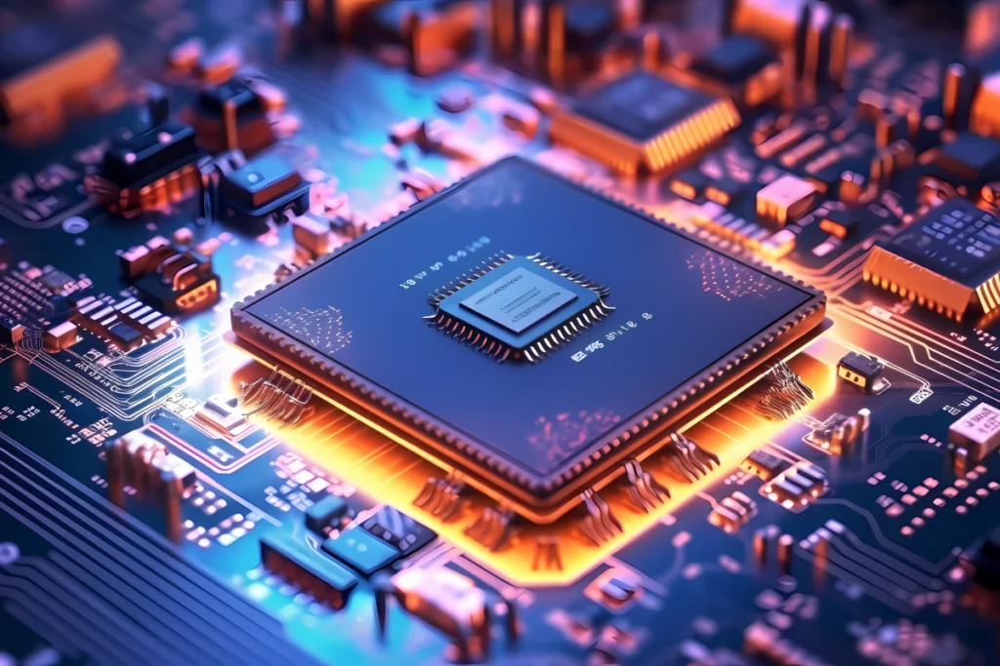

Décadas de 1950 e 1960 - Protótipos, Chips e Redes

1958 - Criou-se o Circuito Integrado, o CHIP, é uma miniatura de um circuito eletrônico, esse avanço possibilitou que a eletrônica fosse miniaturizada.
1964 - "A Mãe de Todas as Demonstrações", apresentada como Protótipo de um computador moderno, que contava com um mouse e um interface gráfica para usuários.
1969 - ARPAnet (Advanced Research Projects Agency Network) - primeira rede de computadores que permitiu a troca de informações entre usuários, e deu inicio a Internet.